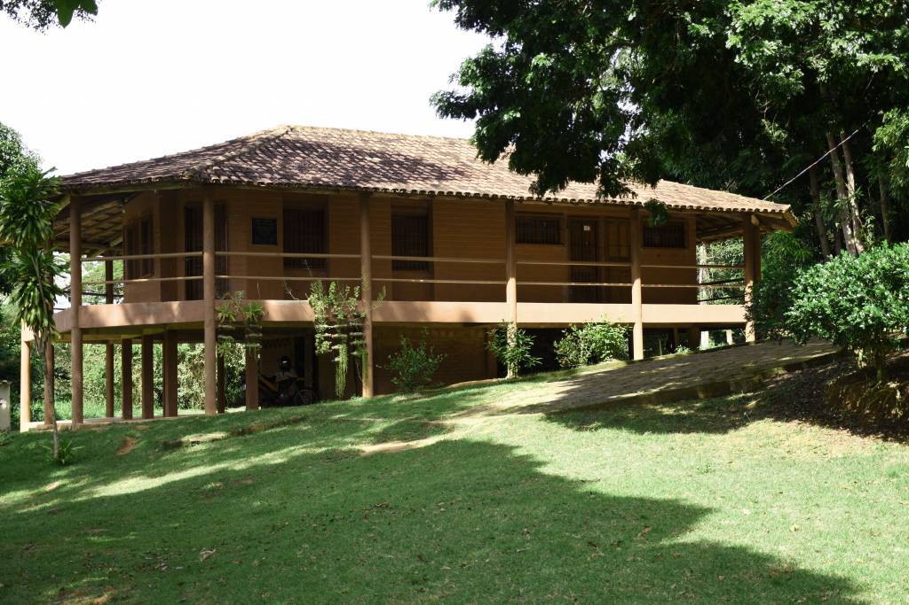
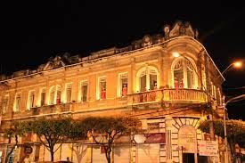

Parque Estadual da Cachoeira da Fumaça

O Parque Estadual da Cachoeira da Fumaça foi criado através do Decreto nº 2.791-ES (24 de agosto de 1984) e complementado através do Decreto nº 4.568-E (21 de setembro de 1990), quando então o Governo do Estado, atendendo uma demanda dos moradores dos municípios de Alegre, Guaçuí e Castelo e de outros Estados da Federação, desapropriou uma área de 27 ha, coberta basicamente de pastagem, mas que continha em seu interior a cachoeira do rio Braço Norte Direito ou Cachoeira da Fumaça, que atraía milhares de visitantes devido à sua grande beleza cênica. A sua cobertura original é do tipo Floresta Estacional Semidecidual, que, ao longo dos anos, foi sendo recomposta, com plantios de essências nativas/frutíferas. Apesar de suas dimensões implicarem em uma fauna reduzida, observou-se, com o replantio, o retorno de aves e pássaros como siriema, beija-flor, rolinha, bem-te-vi, gavião, jurutí, dentre outros. O rio Braço Norte Direito além de contribuir com a beleza cênica do local, através da Cachoeira da Fumaça com seus 140 metros de queda, é um afluente do rio Itapemirim, abastecendo vários centros urbanos.
ARIE – Laerth Paiva Gama
Possui um bosque reflorestado e várias nascentes, proporcionando um agradável contato com a natureza. É um local destinado ao estudo e preservação do meio ambiente, no qual é desenvolvido educação ambiental, produção de mudas nativas, exóticas e muito usado em estudos pelos universitários.
Solar Miguel Simão
A excessiva ornamentação do art-noveou está presente no frontão deste palacete inaugurado em 1927. Pertencia ao libanês Miguel Simão, que utilizava o andar superior para moradia com sua família e no andar inferior funcionava sua casa comercial de café. Os tetos e as paredes dos salões são cobertos com pinturas, muitas delas reproduzidas geometricamente no paquet do piso. Atualmente abriga lojas e bares em pleno funcionamento no andar inferior, seu estado de conservação compromete as características originais de construção bem como, toda a estrutura interna.